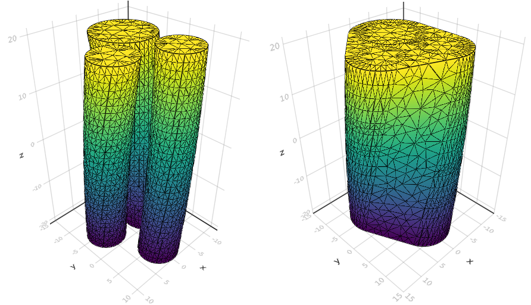
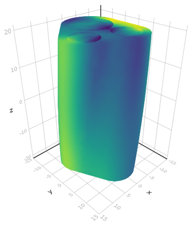

Solve BTPDE
We start by loading SpinDoctor and a Makie plotting backend.
using LinearAlgebra
using SpinDoctor
using GLMakieThe built in geometry recipes allow for making various cell configuration. We here consider the case of three twisted axons immersed in an extracellular space (ECS).
setup = CylinderSetup(;
name = "some-very-real-axons",
ncell = 3,
rmin = 2.0,
rmax = 6.0,
dmin = 0.2,
dmax = 0.3,
height = 40.0,
bend = 0.0,
twist = π / 4,
include_in = false,
in_ratio = 0.6,
ecs_shape = :convex_hull,
ecs_ratio = 0.5,
)We also define coefficients for the different cell compartments :in (axon), :out (myelin), and :ecs (ECS).
coeffs = coefficients(
setup;
D = (; in = 0.002 * I(3), out = 0.002 * I(3), ecs = 0.002 * I(3)),
T₂ = (; in = Inf, out = Inf, ecs = Inf),
ρ = (; in = 1.0, out = 1.0, ecs = 1.0),
κ = (; in_out = 1e-4, out_ecs = 1e-4, in = 0.0, out = 0.0, ecs = 0.0),
γ = 2.67513e-4,
)The following line creates a random cell configuration for our cylinder setup, generates a surface triangulation and calls TetGen to create a tetrahedral finite element mesh. The compartments and boundaries will be ordered in the same way as coeffs.
mesh, = create_geometry(setup)The resulting mesh can be plotted in 3D provided the GLMakie backend is loaded.
plot_mesh(mesh)
The mesh looks good, so we can proceed with the assembly our biological model and the associated finite element matrices.
model = Model(; mesh, coeffs...)
matrices = assemble_matrices(model)The Bloch-Torrey PDE takes a magnetic field gradient pulse sequence as an input. Here we consider a ScalarGradient with a PGSE time profile.
dir = [1.0, 0.0, 0.0]
profile = PGSE(2000.0, 6000.0)
b = 1000
g = √(b / int_F²(profile)) / coeffs.γ
gradient = ScalarGradient(dir, profile, g)SpinDoctor provides a solve function, which has the same base signature for all diffusion MRI problems. The BTPDE is one such problem. They generally take a gradient sequence as an input.
btpde = BTPDE(; model, matrices)
ξ = solve(btpde, gradient)Here, ξ is a vector containing the complex-valued magnetization at all degrees of freedom at the echo time TE. We may compute the resulting signal as follows:
compute_signal(matrices.M, ξ)The global mass matrix M is used to compute the integral. We may however be interested in the compartment-wise signals. This requires splitting the magnetization field into the respective compartments. The compartment mass matrices are also available.
ξ_cmpts = split_field(mesh, ξ)
compute_signal.(matrices.M_cmpts, ξ_cmpts)The final magnetization can be visualized using the plot_field function.
plot_field(mesh, ξ)
In this example, we have computed the complex transverse water proton magnetization field using the finite element method. The measured diffusion MRI signal is the integral of this field, and other quantities of interest, such as the apparent diffusion coefficient (ADC), or the effective diffusion tensor, may easily be obtained from this reference field. Directly solving the BTPDE is thus considered to be the "gold standard" for computing these quantities, as arbitrary precision may be obtained.
However, this is also often the most computationally expensive approach. In the following examples, we will consider some other specialized methods provided by SpinDoctor, each having their own domains of validity, use cases, and computational footprints.